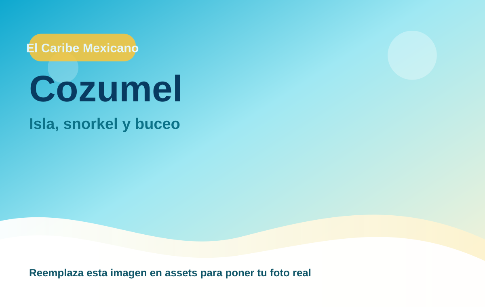
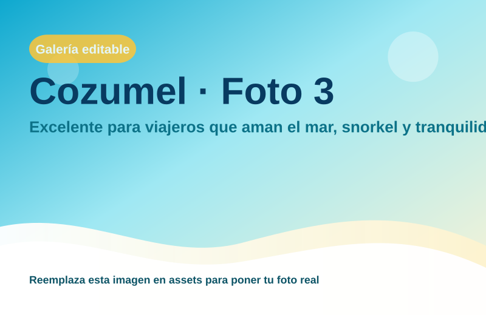

Cozumel
Excelente para viajeros que aman el mar, snorkel y tranquilidad isleña.

Mar cristalino y aventuras acuáticas
Región: El Caribe Mexicano
Ideal para: Isla, snorkel y buceo
Usa esta ficha como base rápida. Puedes imprimirla en PDF desde el navegador o compartir el enlace.
